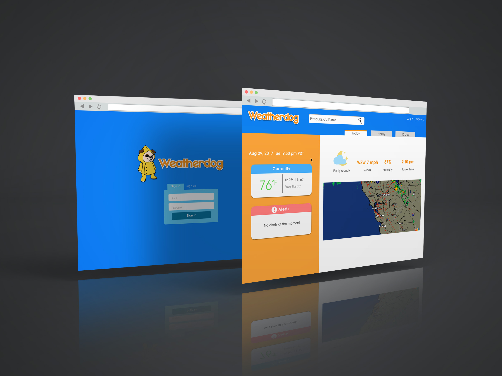
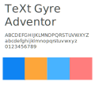
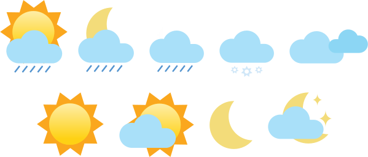
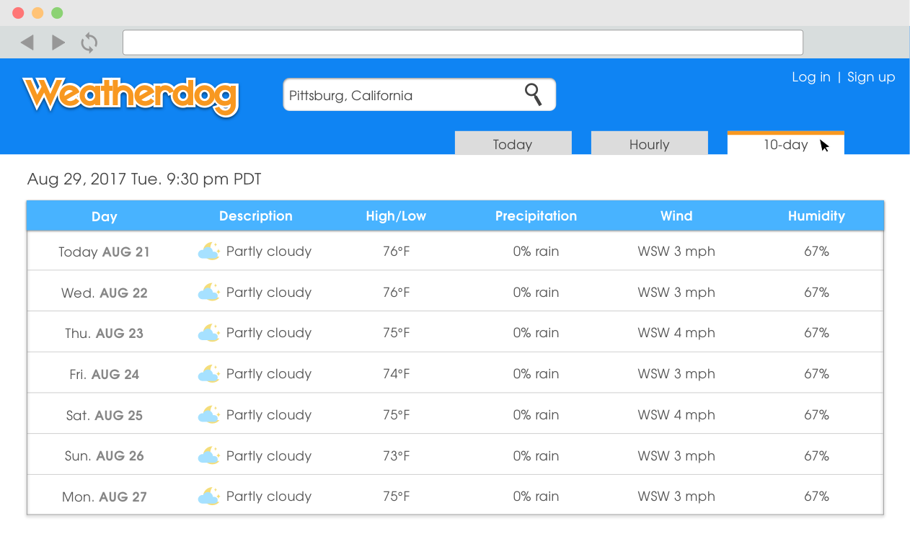

Weatherdog Website
POSITION
WEB DESIGNER
TOOLS & SKILLS USED
SKETCH - ZEPLIN - INVISION
OBJECTIVE
During the hurricanes and tropical storms at the end of summer '17, a colleague of mine wanted to develop a weather website where users can find local weather information as well as alerts pertaining to certain locations. The website would be very simple — we didn't want to include a lot of unnecessary information that would convolute the site. We wanted to include information that everyday people care but also to notify them if there are precautions that they need to take.

APPROACH
The first step in collaborating was deciding what information would need to show. This was done through researching the effectiveness of other weather websites and apps to figure out the most common type of information people care about. My colleague wanted to focus on three ways of weather data: details about the current day, an hourly chart, and a 10-day chart. I worked on figuring out how to create a flow for users to navigate through whiteboard mock-ups.

Once we had a clear idea about how the website will be laid out, it was time to focus on the look and feel of the website. This included figuring out a color scheme and fonts to use. My colleague felt strongly about using blue as our main color, so I played around with different shades until I found one that was subtle yet bold enough for our purposes. I also liked the idea of using a little bit of orange to complement the blue. I then started creating a lot of custom digital graphics.



FUTURE GOALS
The finished design was handed over to my colleague and the project is currently in its beta phase. We will be ready to implement changes and feedback to keep the site updated, but we will also like to work with third party agencies to incorporate disaster relief efforts. We would like to include resources such as links that will provide donation tips during these disasters.


